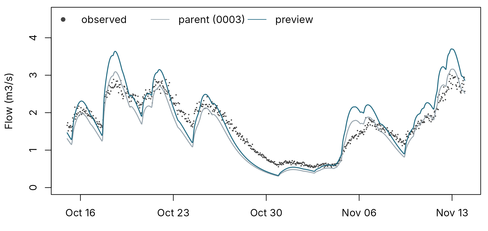
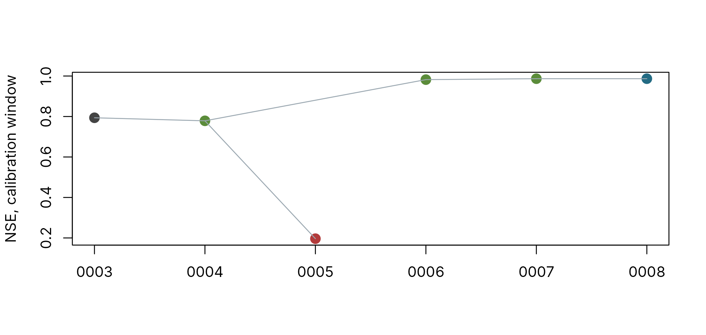

Logging a manual calibration
pdmS7 documentation
Source:vignettes/calibration-log.Rmd
calibration-log.RmdManual calibration is judgement: a hydrologist reads a hydrograph, changes a parameter, and decides whether the model is better. A calibration can be defended later only if that judgement was recorded as it happened and cannot be quietly rewritten. The calibration log does this. Every action writes one entry to a project folder: who, when, which data and parameters, the scores, and the reasoning. Entries are never edited, each carries a checksum of the one before, and a report is generated from them.
This article walks through one calibration, from project start to
sign-off. The design record
explains the decisions behind it. The same steps are available without
code in the app, calibration_app().
Who is writing
Every entry records a declared name and role, with the operating-system login. Roles follow the governance framework: a Custodian does the calibration; a Steward (or Delegated Steward) signs it off; the Owner is named as accountable.
options(pdmS7.user = "Ann Hydrologist", pdmS7.role = "custodian")Set these once per session, or in .Renviron as
PDMS7_USER and PDMS7_ROLE.
Starting the project
project <- file.path(tempdir(), "brook-calibration")
start_calibration_project(
project, catchment = "Example Brook", gauge = "99001", purpose = "Flood forecasting",
area_km2 = 40, owner = "Deputy Director", steward = "Sam Steward"
)The data here are synthetic: four months of hourly rainfall, and the flow of a “true” catchment with gauging noise and a three-day gap.
set.seed(42)
n <- 24 * 120
time <- seq(as.POSIXct("2023-10-01", tz = "UTC"), by = 3600, length.out = n)
forcing <- data.frame(
time = time, rain = ifelse(stats::runif(n) < 0.07, stats::rgamma(n, 0.7, scale = 3), 0),
pet = 0.06
)
truth <- pdm_presets("standard")
truth$area_km2 <- 40
truth$fc <- 1.15
truth$recharge$kg <- 60
truth$surface$k1 <- 3
truth$surface$k2 <- 8
observed <- run_pdm(pdm_from_config(truth), forcing)$output$q_m3s *
exp(stats::rnorm(n, 0, 0.04))
observed[1500:1572] <- NARegistering the data
Registration copies the data into the project, takes their checksums, records their quality, and fixes the scorecard: the calibration and validation windows, the headline score, the starting soil moisture and any warning thresholds. Every later run is scored the same way, so trials can be compared fairly. Rows before the calibration window are warm-up.
Thresholds may be flows or river levels. Levels are converted to flows through a rating table registered with the data, and a level outside the rating is refused rather than extrapolated.
rating <- data.frame(stage_m = c(0.2, 0.5, 1, 1.5, 2), q_m3s = c(0.3, 0.8, 2.2, 5, 9))
thresholds <- data.frame(name = c("Flood Alert", "Flood Warning"), value = c(1.8, 1),
unit = c("flow", "level"))
reg <- register_data(
project, forcing, observed,
calibration = c("2023-10-15", "2023-12-31"),
validation = c("2024-01-01", "2024-01-28"),
headline = "nse", thresholds = thresholds, rating = rating,
reasoning = "Gauge record checked against the station log."
)
str(reg$summary[c("rows", "start", "end", "observed_missing", "observed_longest_gap")])
#> List of 5
#> $ rows : int 2880
#> $ start : chr "2023-10-01T00:00:00Z"
#> $ end : chr "2024-01-28T23:00:00Z"
#> $ observed_missing : int 73
#> $ observed_longest_gap: int 73Choosing the structure
start <- pdm_presets("standard")
start$area_km2 <- 40
select_structure(project, start,
reasoning = "Standard PDM as the starting point for a responsive clay catchment.")The structure is run and scored like any trial, so it is the root of the calibration path.
Trials
preview_trial() runs a change without logging it, so you
can look before you commit.
preview <- preview_trial(project, parent = 3, changes = c(fc = 1.15))
rows <- preview$rows[1:(24 * 30)]
parent <- run_pdm(pdm_from_config(start), forcing)$output$q_m3s
top <- max(observed[rows], parent[rows], preview$simulated[rows], na.rm = TRUE) * 1.25
par(mar = c(3, 4.2, 0.6, 0.6))
plot(time[rows], observed[rows], pch = 16, cex = 0.3, col = pal[5], xlab = "",
ylab = "Flow (m3/s)", ylim = c(0, top))
lines(time[rows], parent[rows], col = pal[7], lwd = 1.5)
lines(time[rows], preview$simulated[rows], col = pal[1], lwd = 1.5)
legend("topleft", c("observed", "parent (0003)", "preview"), bty = "n", horiz = TRUE,
col = c(pal[5], pal[7], pal[1]), pch = c(16, NA, NA), lty = c(NA, 1, 1))
The preview against its parent over part of the calibration window.
round(rbind(parent = unlist(project_trials(project)[1, c("nse", "volume_error", "kge_alpha")]),
preview = unlist(preview$scores[c("nse", "volume_error", "kge_alpha")])), 3)
#> nse volume_error kge_alpha
#> parent 0.794 -0.118 1.070
#> preview 0.779 0.014 1.256The volume error has gone from 12 per cent too dry to near zero, but the NSE has fallen slightly: the variability ratio shows the peaks are now too large. The trial is still an improvement, because the water balance is right and the peaks are a separate question. That judgement is the hydrologist’s, not the headline score’s, and the log records it with its reason:
log_trial(project, parent = 3, changes = c(fc = 1.15), verdict = "better",
reasoning = "Volume 12 per cent low; raised the rainfall factor. Peaks now too big.")
log_trial(project, parent = 4, changes = c(recharge.kg = 10), verdict = "worse",
reasoning = "Faster recharge to move peak water into baseflow; recessions far too high.")
log_trial(project, parent = 4, changes = c(recharge.kg = 60), verdict = "better",
reasoning = "Slower recharge instead; peaks and recessions both match.")
log_trial(project, parent = 6, changes = c(surface.k1 = 3, surface.k2 = 8),
verdict = "better", reasoning = "Peaks slightly early; slowed the surface cascade.")Trial 0005 was a dead end; trial 0006 went back to 0004 and tried the other way. The log keeps both, because a defensible calibration includes what was tried and rejected.
A short automatic calibration can polish the result. It is logged like a trial, with its bounds, seed and the table of every start.
auto <- log_auto_calibration(
project, parent = 7, lower = c(surface.k1 = 1, surface.k2 = 3),
upper = c(surface.k1 = 6, surface.k2 = 15), starts = 3, seed = 1,
control = list(maxit = 30), reasoning = "Fine-tune the routing within physical bounds."
)
log_note(project, "The January gap is a logger fault, not low flow.", refers_to = 2)The calibration path
trials <- project_trials(project)
trials[, .(id, type, parent, changes, verdict, nse = round(nse, 3),
volume_error = round(volume_error, 3))]
#> id type parent changes
#> <char> <char> <char> <char>
#> 1: 0003 structure_selected <NA>
#> 2: 0004 trial 0003 fc 1 -> 1.15
#> 3: 0005 trial 0004 recharge.kg 24 -> 10
#> 4: 0006 trial 0004 recharge.kg 24 -> 60
#> 5: 0007 trial 0006 surface.k1 2 -> 3; surface.k2 4 -> 8
#> 6: 0008 auto_calibration 0007
#> verdict nse volume_error
#> <char> <num> <num>
#> 1: <NA> 0.794 -0.118
#> 2: better 0.779 0.014
#> 3: worse 0.196 0.020
#> 4: better 0.982 0.001
#> 5: better 0.987 0.001
#> 6: <NA> 0.987 0.001
x <- seq_len(nrow(trials))
colour <- ifelse(trials$type == "auto_calibration", pal[1],
ifelse(is.na(trials$verdict), pal[5],
ifelse(trials$verdict == "better", pal[3], pal[6])))
plot(x, trials$nse, pch = 16, col = colour, cex = 1.6, xaxt = "n", xlab = "",
ylab = "NSE, calibration window")
axis(1, at = x, labels = trials$id)
parents <- match(trials$parent, trials$id)
segments(x[parents], trials$nse[parents], x, trials$nse, col = pal[7])
Every run by its NSE on the calibration window. Lines join each run to its parent; colour shows the verdict.
Candidate and validation
The candidate is rerun before it is accepted, and must reproduce its recorded output exactly. Validation scores the validation window, once.
propose_candidate(project, entry = auto$id,
reasoning = "Best NSE with physically sensible time constants.")
val <- validate_candidate(project, reasoning = "Holds up on January.")
round(data.frame(calibration = unlist(val$calibration_scores),
validation = unlist(val$validation_scores))[c("nse", "kge", "volume_error",
"fdc_high"), ], 3)
#> calibration validation
#> nse 0.987 0.971
#> kge 0.992 0.974
#> volume_error 0.001 0.000
#> fdc_high -0.016 -0.023Warning thresholds
Every run was also scored at both thresholds. An event is an episode above the threshold; a simulated crossing within six hours of an observed one is a hit, and exceedances less than a day apart count as one event.
pick <- function(scores, window) {
metrics <- c("observed_events", "hits", "misses", "false_alarms", "pod", "far", "csi",
"crossing_error_h", "csi_step")
do.call(rbind, lapply(thresholds$name, function(t) {
data.frame(threshold = t, window = window,
lapply(stats::setNames(metrics, metrics), function(m) {
round(scores[[paste0(m, ":", t)]], 2)
}), check.names = FALSE)
}))
}
rbind(pick(val$calibration_scores, "calibration"), pick(val$validation_scores, "validation"))
#> threshold window observed_events hits misses false_alarms pod far
#> 1 Flood Alert calibration 4 3 1 0 0.75 0.0
#> 2 Flood Warning calibration 5 4 1 1 0.80 0.2
#> 3 Flood Alert validation 3 1 2 1 0.33 0.5
#> 4 Flood Warning validation 1 0 1 0 0.00 NA
#> csi crossing_error_h csi_step
#> 1 0.75 0.67 0.97
#> 2 0.67 1.50 0.92
#> 3 0.25 0.00 0.76
#> 4 0.00 NA 0.00Two lessons. First, a high NSE does not guarantee warning skill: the
candidate scores an NSE near 0.97 in validation, yet catches only one of
the three alert events, because January’s peaks barely cross the
threshold and small errors decide whether they do. Second, event and
step scores answer different questions. Step scores weight each event by
its length, so a long flood simulated well dominates them and a short
flood missed barely registers; here csi_step is the kinder
score. Event scores count each flood once, which is how a warning
service is judged, and they count a crossing an hour late as a hit,
where steps count a miss and a false alarm. Note how few events there
are: with one to five per window, one event moves POD by a fifth or
more, so read these scores alongside the counts. The report draws all
thresholds and both windows on one performance diagram.
A project for a warning service can rank runs by a threshold score,
with headline = "csi:Flood Warning" at registration.
Automatic calibration can reward threshold skill too. Event counts
change in steps, which a gradient optimiser cannot follow, so this uses
the derivative-free Nelder-Mead method, with a continuous score to break
ties:
log_auto_calibration(
project, parent = 7, lower = c(surface.k1 = 1), upper = c(surface.k1 = 6),
objective = "nse", method = "nelder_mead", threshold_objective = "Flood Warning",
threshold_weight = 1, reasoning = "Tune routing for warning timing."
)The entry records the method, the weighted objective and the number of model runs, so a reviewer can see what the optimiser was rewarded for.
Sign-off
Only a Steward or Delegated Steward can sign off, and not one who wrote any of the calibration. The package checks both the declared name and the login, so a Steward cannot sign off from the Custodian’s session:
options(pdmS7.user = "Sam Steward", pdmS7.role = "steward")
reviewed <- c(integrity = TRUE, data = TRUE, calibration_path = TRUE, validation = TRUE)
tryCatch(sign_off_project(project, "Accepted.", reviewed),
error = function(e) conditionMessage(e))
#> [1] "You wrote calibration entries in this project; another Steward must sign off"In practice the Steward signs off on their own machine, or in the app. Below we stand in for that machine by giving the Steward a different login.
sign_off_project(project, "Reviewed the path, data and validation. Accepted for forecasting.",
reviewed)
read_project(project)$status
#> [1] "signed_off"A signed-off project accepts nothing further until a Steward reopens it with a reason.
Integrity
verify_project() recomputes every checksum and, with
rerun = TRUE, repeats every run.
checks <- verify_project(project, rerun = TRUE)
checks[, .N, by = .(check, ok)]
#> check ok N
#> <char> <lgcl> <int>
#> 1: numbering TRUE 12
#> 2: chain TRUE 12
#> 3: data forcing TRUE 1
#> 4: data observed TRUE 1
#> 5: data rating TRUE 1
#> 6: series TRUE 2
#> 7: rerun TRUE 7Now suppose someone tidies the reasoning of trial 0005 after the event:
file <- file.path(project, "entries", "0005-trial.yml")
original <- readLines(file)
writeLines(sub("recessions far too high", "recessions slightly high", original), file)
verify_project(project)[ok == FALSE]
#> check entry ok detail
#> <char> <char> <lgcl> <char>
#> 1: chain 0006 FALSE Previous entry altered, removed or inserted
writeLines(original, file)The edit is caught at the next entry, whose stored checksum no longer matches. Changed data files and runs that no longer reproduce are caught the same way.
The report
build_report(project)build_report() writes report/report.html, a
single file with embedded figures that can be attached to a review, and
a Markdown copy. It opens with the integrity result, then shows the
data, the structure, the calibration path, the candidate’s hydrographs
and flow-duration curves for both windows, parameter sensitivity, the
sign-off and the final configuration with every entry’s checksum.
Tracing operational runs
Once a calibration is in use, the question changes from “how was it calibrated” to “which calibration produced this forecast”. The run log answers it. It is off by default.
register <- file.path(dirname(project), "approved.yml")
writeLines(c("projects:", paste0(" - ", basename(project))), register)
options(pdmS7.run_log = file.path(tempdir(), "runs.csv"), pdmS7.register = register,
pdmS7.run_tag = "forecast 2024-02-01 06:00")
approved <- pdm_from_config(auto$configuration)
recent <- forcing[2700:2880, ]
forecast <- run_pdm(approved, recent)
check <- run_pdm(pdm_from_config(start), recent)
read_run_log()[, .(tag, fingerprint = substr(fingerprint, 1, 8), rows, status, approval,
project, sign_off)]
#> tag fingerprint rows status approval
#> <char> <char> <int> <char> <char>
#> 1: forecast 2024-02-01 06:00 b826a8a0 181 ok approved
#> 2: forecast 2024-02-01 06:00 ec8dc73e 181 ok unapproved
#> project sign_off
#> <char> <char>
#> 1: brook-calibration 0012
#> 2:The first run used the signed-off parameters and is marked
approved, with the project and sign-off entry; the second
used the uncalibrated structure and is marked unapproved.
Neither was blocked. If the project is reopened, runs with the old
parameters are marked superseded.
Summary
| Step | Function |
|---|---|
| Declare who you are | options(pdmS7.user = , pdmS7.role = ) |
| Start | start_calibration_project() |
| Data, scorecard and thresholds | register_data() |
| Structure | select_structure() |
| Try, then log |
preview_trial(), log_trial(),
log_auto_calibration(), log_note()
|
| Decide |
propose_candidate(),
validate_candidate()
|
| Approve |
sign_off_project(), reopen_project()
|
| Check and report |
verify_project(), build_report(),
project_trials()
|
| Trace use |
options(pdmS7.run_log = , pdmS7.register = ),
read_run_log()
|